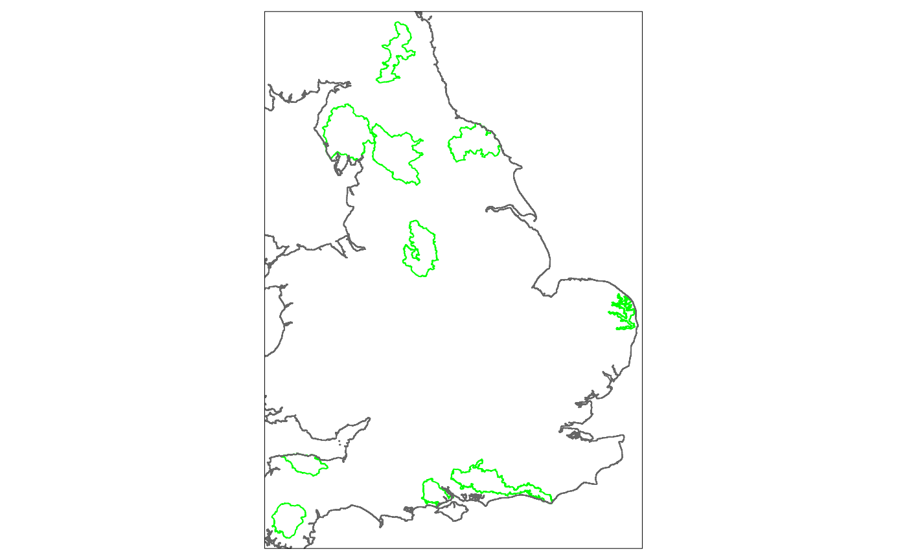

Example_lakes.RmdThis notebook demonstrates the use of extRatum package drawing on natural environment data. extRatum provides summary statistics of local geospatial features within a given geographic area. It does so by calculating the area covered by a target geospatial feature (i.e. buildings, parks, lakes, etc.). The geospatial features can be of any geospatial data type, including point, polygon or line data.
In this example, we focus on natural environment characteristics.
We make use of openly available geospatial data to calculate the area covered by water bodies in each National Park in England.
## Warning: package 'sf' was built under R version 4.0.3## Linking to GEOS 3.8.0, GDAL 3.0.4, PROJ 6.3.1## Loading required package: sp##
## Attaching package: 'dplyr'## The following objects are masked from 'package:raster':
##
## intersect, select, union## The following objects are masked from 'package:stats':
##
## filter, lag## The following objects are masked from 'package:base':
##
## intersect, setdiff, setequal, unionFirst, we read in the boundaries of Great Britain that will help with plotting the results using raster package .
GBR <- getData("GADM", country="GBR", level=0)Then, we read in the boundaries of National Parks in England, published by Natural England.
The data downloaded from: https://naturalengland-defra.opendata.arcgis.com/datasets/d333c7529754444894e2d7f5044d1bbf_0.
# read in the national parks boundaries
national_parks <- st_read("lake_data/National_Parks_(England)/National_Parks__England____Natural_England.shp")## Reading layer `National_Parks__England____Natural_England' from data source `C:\Users\User\Desktop\extRatum\vignettes\lake_data\National_Parks_(England)\National_Parks__England____Natural_England.shp' using driver `ESRI Shapefile'
## Simple feature collection with 10 features and 9 fields
## geometry type: POLYGON
## dimension: XY
## bbox: xmin: 246828.2 ymin: 56378.39 xmax: 652373.5 ymax: 633117
## projected CRS: OSGB 1936 / British National Grid
# plot the boundaries using a static map
tmap_mode("plot")## tmap mode set to plotting
#tmap_mode("view") #use this code for creating an interactive map
tm_shape(national_parks) +
tm_borders(col = "green") +
tm_shape(GBR) +
tm_borders()
Finally, we read in the water bodies boundaries in England published by the Environment Agency.
The data downloaded from: https://data.gov.uk/dataset/33dcd836-3813-4233-a3ca-856358312415/wfd-lake-water-bodies-cycle-1
# read in the water bodies boundaries
water_bodies <- st_read("lake_data/EA_WFDLakeWaterBodiesCycle1_SHP_Full/data/WFD_Lake_Water_Bodies_Cycle_1.shp")## Reading layer `WFD_Lake_Water_Bodies_Cycle_1' from data source `C:\Users\User\Desktop\extRatum\vignettes\lake_data\EA_WFDLakeWaterBodiesCycle1_SHP_Full\data\WFD_Lake_Water_Bodies_Cycle_1.shp' using driver `ESRI Shapefile'
## Simple feature collection with 620 features and 12 fields
## geometry type: MULTIPOLYGON
## dimension: XY
## bbox: xmin: 143019 ymin: 24071 xmax: 650347 ymax: 643896
## projected CRS: OSGB 1936 / British National Grid
# create a map
tm_shape(water_bodies) +
tm_borders(col = "blue") +
tm_shape(GBR) +
tm_borders()extRatum functionsFinally, it is time to run the areal_calc() function to calculate the area covered by water bodies in each National Park in England.
Note that we have to pass a planar coordinate system so taht the algorithm can calculate areas. In this example we use the British National Grid.
# run the function from extRatum package
water_coverage <- areal_calc(
water_bodies,
national_parks,
unique_id_code = "FID",
crs = "epsg:27700"
)The output of this function will be a dataframe containing:
Given that everything is measured in sqm, the ratio represents what is the % of area covered by water bodies by sqm. In this way, we have a relative measure that can be compared across all National Parks and is independent of their size.
We can also transform the calculated values in sqkm by dividing the value in sqm by 1,000,000. This can be done as follows.
water_coverage$AreaCovered_sqkm <- water_coverage$AreaCovered /1000000
head(water_coverage)## # A tibble: 6 x 5
## FID TotalArea AreaCovered Ratio AreaCovered_sqkm
## <int> <dbl> <dbl> <dbl> <dbl>
## 1 1 1652679314. 478289. 0.000289 0.478
## 2 2 693121787. 1573645. 0.00227 1.57
## 3 3 2184826675. 2862833. 0.00131 2.86
## 4 4 1437831813. 9812351. 0.00682 9.81
## 5 5 955747461. 1811909. 0.00190 1.81
## 6 6 1441061643. 702244. 0.000487 0.702Finally, we append the data calculated to the original table of National Parks.
# perform a join of tables
national_parks_v2 <- left_join(national_parks, water_coverage, by = "FID")We can now create two maps: a first map showing the total area covered by water bodies.
# create a choropleth map
tm_shape(national_parks_v2) +
tm_fill("AreaCovered",
style = "fisher",
palette = "Blues",
alpha = 0.6,
id="NAME",
title="Area covered by water bodies (in m2)") +
tm_legend(position = c("right", "top")) +
tm_layout(legend.outside = TRUE) +
tm_shape(GBR) +
tm_borders()And a second map that shows the ratio of water bodies to the total area of each National Park.
# create a choropleth map
tm_shape(national_parks_v2) +
tm_fill("Ratio",
style = "fisher",
palette = "Blues",
alpha = 0.6,
id="NAME",
title="Ratio of water bodies to total area of National Parks") +
tm_legend(position = c("right", "top")) +
tm_layout(legend.outside = TRUE) +
tm_shape(GBR) +
tm_borders()